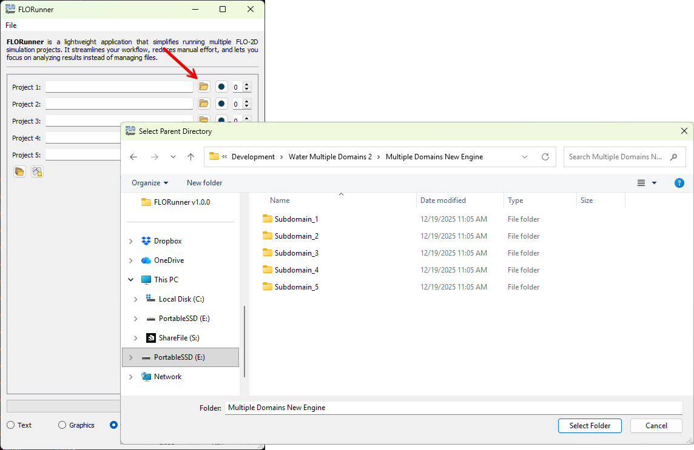
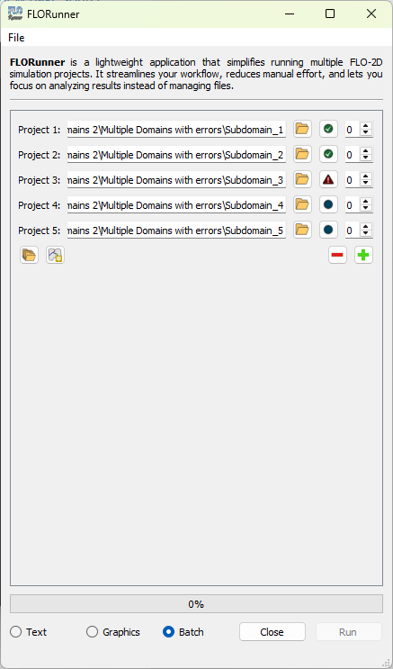

FLORunner
FLORunner allows you to batch run one or more FLO-2D projects in a controlled sequence.
Select the project folder.
Click the Folder button and select the
CONT.DATfile located in the FLO-2D project directory.
Select multiple project folders (optional).
Click the Multiple folders button to select directories containing multiple FLO-2D projects.
 Review detected projects.
FLORunner automatically detects all projects and displays their current status.
 Note
Green check mark: project completed successfully.
Blue circle: project is on hold.
Red warning icon: project failed.
Set the execution order.
Use the Up Arrow and Down Arrow buttons to define the run order.
Note
Order numbers must be unique.
Projects with order
0will not run.
Run the simulations.
Click the Run button to start the simulations in the defined order.